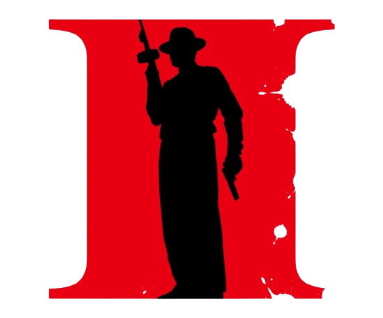

Mafia II
Vito Scaletta, Empire Bay sokaklarında bir işi yapması konusunda güvenilebilecek biri olarak adını duyurmaya başladı. Arkadaşı Joe ile birlikte kendisini mafyaya kanıtlamaya çalışıyor, daha büyük ödül, statü ve sonuçları olan suçlarla aile basamaklarını hızla tırmanıyor… Bilge bir adam olarak hayat göründüğü kadar dokunulmaz değildir.
Yaş Değerlendirmesi : 18+
Bu Oyun Hakkında
Vito Scaletta, Empire Bay sokaklarında bir işi yapması konusunda güvenilebilecek biri olarak adını duyurmaya başladı. Arkadaşı Joe ile birlikte kendisini mafyaya kanıtlamaya çalışıyor, daha büyük ödül, statü ve sonuçları olan suçlarla aile basamaklarını hızla tırmanıyor… Bilge bir adam olarak hayat göründüğü kadar dokunulmaz değildir.
Aksiyon Dolu Oynanış: Yoğun silahlı çatışmalar, zorlu araba kovalamacaları ve göğüs göğüse dövüşler — "insan yapımı" olmak için bunların hepsi ve daha fazlası gerekecek.
Epik Gangster Hikayesi: İkonik mafya dramasından ilham alan ilgi çekici karakterler ve sinematik sunum, oyuncuları mafyadaki hayatın cazibesine ve imkansız kaçışına çekecek.
Sürükleyici Dünya ve Dönem: Empire Bay dünyasına girin - Avrupa'da II. Dünya Savaşı tüm hızıyla sürüyor ve mimari, arabalar, müzik ve giyim, dönemi çarpıcı ayrıntılarla yansıtıyor. Zaman geçtikçe, yarış arabaları, 50'lerin modası ve dönemin en iyi müziklerinden bazıları yeni ve harika bir çağın doğuşunu yansıtıyor.
Illusion Engine™: 2K Czech'in tescilli Illusion Engine'i, oyuncuların Empire Bay'in 10 mil karelik güzel bir şekilde oluşturulmuş dış ortamlarını ve karmaşık tasarımlı iç mekanlarını keşfetmelerine olanak tanır.
Film Müziği Dönemin Ruh Halini Yansıtıyor: Mafia II'de dönemin en etkili sanatçılarından bazılarının parçaları yer aldığından, oyuncular Amerika'nın Altın Çağı'na kendilerini kaptıracak.
Yetişkin İçerik Açıklaması
Geliştiriciler içeriği şu şekilde tarif ediyorlar
Bu oyunda her yaşa uygun olmayan veya iş yerinde görüntülenmesi sakıncalı olabilecek içerikler yer alabilir: Genel Yetişkin İçerik
Sistem Gereksinimleri
İşletim Sistemi *: Microsoft Windows XP (SP2 or later) / Windows Vista / Windows 7
İşlemci: 2.4 GHz Quad Core processor
Bellek: 2 GB RAM
Ekran Kartı: nVidia GeForce 8600 / ATI HD2600 Pro or better
DirectX: Sürüm 9.0
Depolama: 8 GB kullanılabilir alan
Ses Kartı: 100% DirectX 9.0c compatible sound card